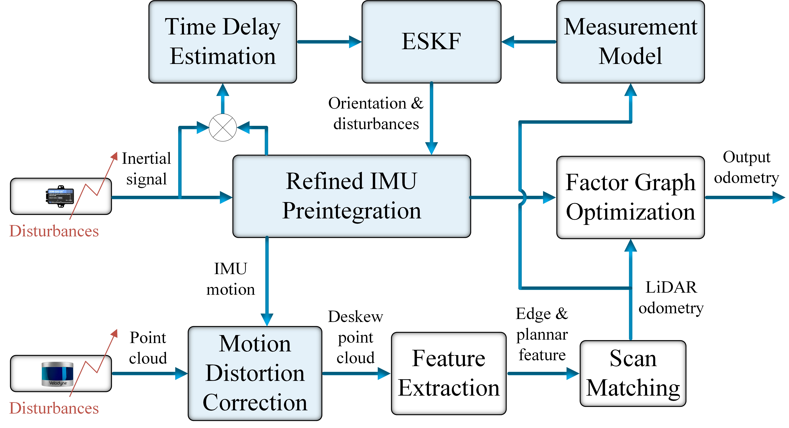
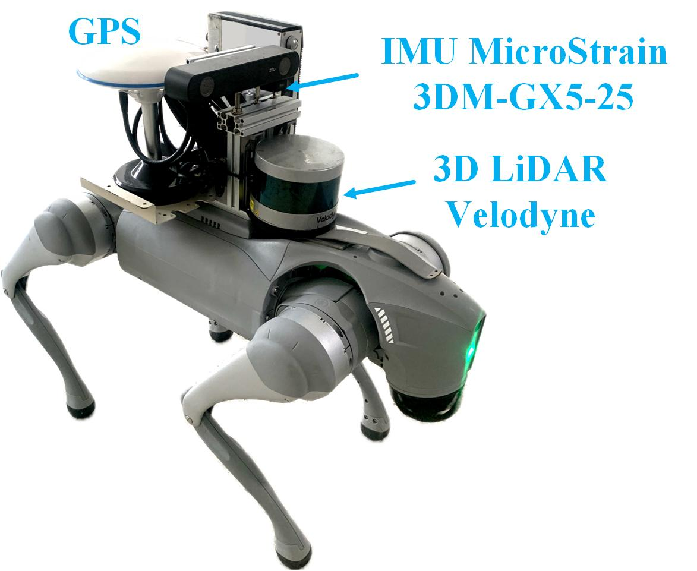
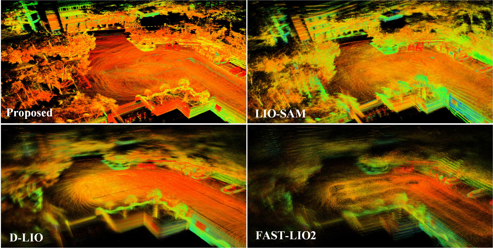
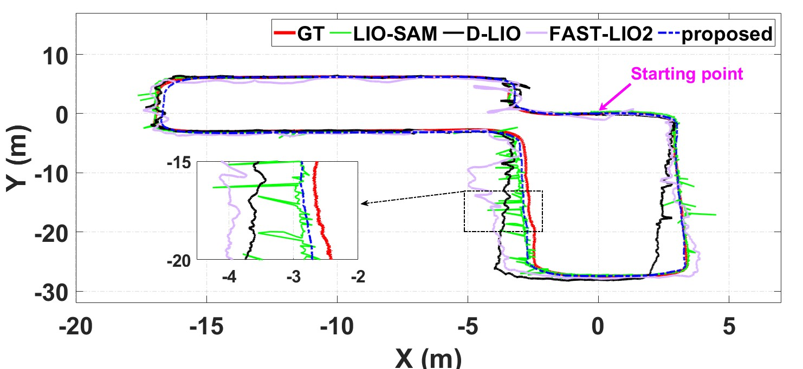

TDE-LIO is a tightly-coupled LiDAR-Inertial Odometry framework specifically engineered for quadruped robots. While conventional LIO systems assume smooth trajectories and clean inertial data, legged robots introduce brutal realities: repetitive foot-ground impacts, severe vibrations, and fluctuating motion profiles.
These inherent disturbances corrupt IMU measurements, leading to degraded preintegration and inaccurate LiDAR motion deskewing. TDE-LIO solves this by introducing a Time Delay Estimation (TDE) framework to model and compensate for these unknown external disturbances in real-time, feeding refined states into an Error-State Kalman Filter (ESKF) for highly robust odometry.
Leverages a Time Delay Estimation (TDE) mechanism to accurately characterize and quantify unknown, high-frequency disturbances acting on the IMU during quadruped locomotion.
Innovatively updates both the IMU orientation and the disturbance uncertainty model jointly within an Error-State Kalman Filter, ensuring mathematically rigorous state estimation.
By pre-compensating IMU measurements before integration, the framework drastically reduces drift and degradation typically caused by foot-contact vibrations.
Refined, high-fidelity inertial pose estimation directly translates to superior LiDAR point cloud motion compensation, preserving sharp geometric features.
The pipeline operates entirely on exteroceptive and proprioceptive sensing (a 3D LiDAR and an IMU), eliminating the need for complex leg kinematics or external foot contact sensors. The diagram below illustrates how the TDE module intercepts and refines IMU streams before they reach the main mapping backend.

We comprehensively benchmarked the framework using the Unitree Go2 quadruped platform.
The robot was deployed across demanding scenarios, including structured indoor corridors, wide outdoor environments, high-speed dynamic locomotion, and regimes specifically designed to induce severe physical vibrations.
Compared to standard LIO baselines that lack disturbance compensation, TDE-LIO demonstrates noticeably smoother trajectory tracking and produces highly consistent, geometrically accurate point cloud maps, entirely suppressing the "blurring" effect caused by vibrations.



The system is built and tested natively on Ubuntu 20.04 with ROS Noetic.
sudo add-apt-repository ppa:borglab/gtsam-release-4.0 sudo apt update sudo apt install libgtsam-dev libgtsam-unstable-dev
cd ~/catkin_ws/src git clone https://github.com/HoangHungIRL/TDE-LIO.git cd .. catkin_make
source devel/setup.bash roslaunch tde_lio run.launch # In a new terminal tab: rosbag play your_dataset.bag
If you utilize this framework in your academic research, we kindly request you to cite our paper:
@ARTICLE{TDE-LIO,
author={Hoang, Quoc Hung and Kim, Gon-Woo},
journal={IEEE Robotics and Automation Letters},
title={External Disturbances Compensation for LiDAR-Inertial Odometry Under Vibration Conditions on Quadruped Robot},
year={2026},
volume={11},
number={4},
pages={4713-4720},
doi={10.1109/LRA.2026.3665313}
}
Acknowledgments: This work builds upon excellent open-source projects including LIO-SAM, D-LIO, and ESKF IMU Attitude Estimation.
Contact: Quoc Hung Hoang (hoanghung21301580@gmail.com). For bugs or discussions, please open an issue on the GitHub repository.